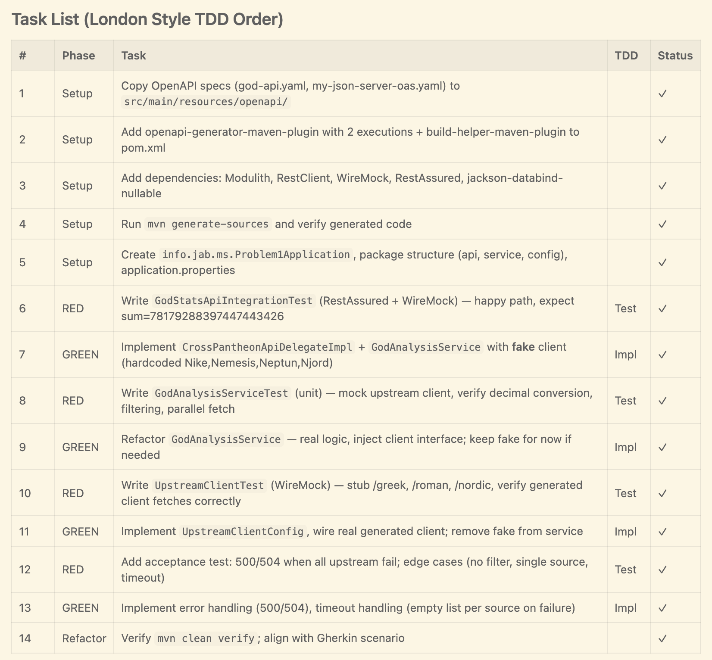
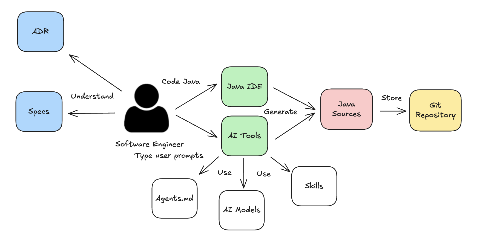
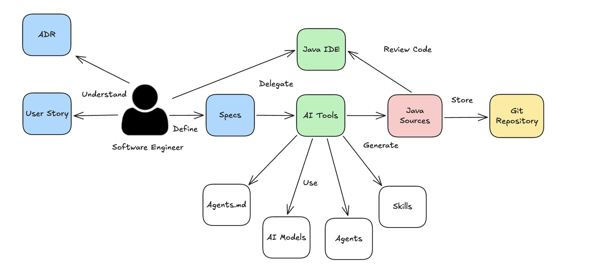
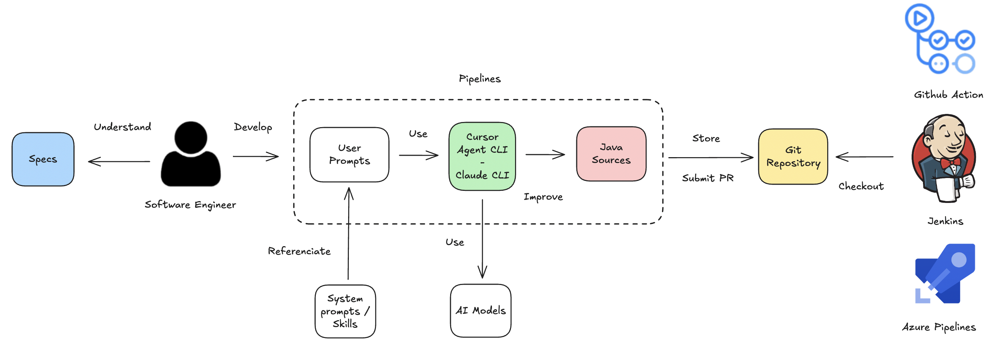

Taller técnico sobre AI Tooling para el desarrollo con Java

Who I am
|
|
Juan Antonio Breña Moral Engineering @ IG Group, EU Division
Twitter | Github | LinkedIn |
|
"Make it work, make it right, make it fast." - Kent Beck "Lead me, follow me, or get out of my way.", "Pressure makes diamonds." - George S. Patton Jr. |
|
 Source: Leavitt's Alignment Model (1965) >> People, Process and Technology Framework
Source: Leavitt's Alignment Model (1965) >> People, Process and Technology Framework
Agenda (15 min)
- ¿Como desarrollas?
- Conceptos
Agenda (45 min)
Demos I
- Usando Skills
- Definiendo un buen fichero AGENTS.md
- Usando Agentes en tu desarrollo
Agenda (15 min)
Demos II
- Usando los modos de Agente (Ask, Plan, Agent)
Agenda (15 min)
Demos III
- Usando Asistentes AI en tus pipelines
Slides
jbang trust list
jbang cache clear
jbang catalog list jabrena
jbang qr-code@jabrena \
--url https://jabrena.github.io/cursor-rules-java/codemotion-madrid-2026/
¿Como desarrollas?
¿Como desarrollas?
- ¿Como son las historias de usuario?
- Anemica
- Completa
¿Como desarrollas?
- ¿Como son los ADRs de tu área?
- No existen
- Están Obsoletos
- Se actualizan periodicamente
¿Como desarrollas?
- ¿Como te organizas para desarrollar las historias de usuario?
- Trabajo solo
- Comentamos todas las mañanas
- Hago Pair programming
¿Como desarrollas?
- Desarrollo tests
- Si nos da tiempo
- Es obligatorio
¿Como desarrollas?
En muchas ocasiones sin hacer uso de AI Tooling, al equipo no le llega toda la informacion necesaria, dentro del equipo, no hay discusiones sobre alternativas, en algunos casos, no hay tests o estos son insuficientes.
Asi, es complicado adoptar AI Tooling en el dia a dia.
Conceptos
- Asistentes AI
- LLMs
- AGENTS.md
- Skills
- Subagents
- MCP/CLI tools
- ADRs
- Plans
- SDD
- Workflows
Asistentes de AI
En el mercado hay muchos asistentes de AI, como Cursor, Claude Code, GitHub Copilot, entre otros.
Asistentes de AI
Cursor AI |
Cursor CLI |
Claude Code CLI |
|
GitHub Copilot |
GitHub Copilot CLI |
JetBrains Junie |
LLMs
Los LLM (Large Language Models) son sistemas de Inteligencia Artificial entrenados con volúmenes masivos de texto para comprender, generar y resumir lenguaje humano de forma natural.
AGENTS.md
Un formato abierto y sencillo para guiar a los agentes de programación. Piensa en AGENTS.md como un README para agentes: un lugar dedicado y predecible donde ofrecer el contexto y las instrucciones para ayudar a los agentes de codificación con IA a trabajar en tu proyecto.
https://agents.md/Skill
Las Skills son carpetas de instrucciones, scripts y recursos que las herramientas de IA cargan dinámicamente para mejorar el rendimiento en tareas especializadas.
Skill
Estructura de una Skill:
skill-name/
├── SKILL.md # Required: metadata + instructions
├── scripts/ # Optional: executable code
├── references/ # Optional: documentation
├── assets/ # Optional: templates, resources
└── ... # Any additional files or directories
Skill
¿Donde puede encontrar Skills para Java?
https://skills.sh/Subagents
Los Subagents son asistentes de IA especializados que el agente de Cursor puede delegar tareas. Cada subagente opera en su propia ventana de contexto, maneja tipos de trabajo específicos y devuelve su resultado al agente principal.
https://cursor.com/docs/subagentshttps://code.claude.com/docs/en/sub-agents
MCP Severs
Model Context Protocol (MCP) is an open protocol that standardizes how applications provide context to LLMs.
Source: https://modelcontextprotocol.io/introductionMCP Severs
Think of MCP as a plugin system for Cursor:
 Source: https://docs.cursor.com/context/model-context-protocol
Source: https://docs.cursor.com/context/model-context-protocol
ADRs
An Architectural Decision (AD) is a justified design choice that addresses a functional or non-functional requirement that is architecturally significant.
https://adr.github.io/Plans
Los planes son una forma de guiar al agente para que trabaje en una tarea.
https://cursor.com/docs/agent/plan-modehttps://code.claude.com/docs/en/common-workflows
Plans

SDD
Spec-driven development (SDD) is a software engineering methodology where a formal, machine-readable specification serves as the authoritative source of truth and the primary artifact from which implementation, testing, and documentation are derived.
https://openspec.dev/https://github.github.com/spec-kit/
Workflows
- Prompting Enginering Workflow
- Agent-Driven Engineering Workflow
- Pipelines Workflow
Workflows
Prompting Enginering Workflow

Workflows
Agent-Driven Engineering Workflow

Workflows
Pipelines Workflow

Demos I
- Usando Skills
- Definiendo un buen fichero AGENTS.md
- Usando Agentes en tu desarrollo
Demos II
- Usando los modos de Agente (Ask, Plan, Agent)
Demos III
- Usando Asistentes AI en tus pipelines
References
🙏 🙏 🙏
Thanks